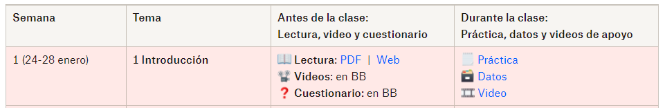

2 Programa de la materia
2.1 Datos generales de la materia
| Nombre del curso | Estadística para las Ciencias Sociales |
Horas teóricas totales | 32 |
| Clave del curso | HLP006 | Horas prácticas totales | 32 |
| Nombre del profesor | Manuel Mejía Ramírez, MSc. | Horas independientes totales | 64 |
| Correo-e del profesor | manuel.mejia@cetys.mx | Total de horas de la materia | 128 |
| Solicitar asesorías | Link | Créditos | 8 |
| Horario Grupo P2: | Martes y Jueves 8 - 10 am. | Zoom Grupo P2: Contraseña: 2022 |
Link |
| Horario Grupo F2/O2: | Martes 12 a 2pm; Miércoles 10 am-12 pm. |
Zoom Grupo F2/O2: Contraseña: 2022 |
Link |
| Horarios para asesorías: | Agenda asesorías en el link de arriba. |
Zoom para asesorías: | Link |
2.2 🗣️ Presentación
- El presente curso se justifica como una herramienta que ha permitido a la psicología adquirir carácter científico y, consecuentemente, permite al estudiante desarrollar un pensamiento sistematizado.
- Está en estrecha relación con los cursos de Elaboración de instrumentos de evaluación y de Metodología de la investigación.
- Al cursarlo, el estudiante desarrollará competencias disciplinares extendidas que le permitirán aplicar procedimientos estadísticos en el ámbito del comportamiento, como un campo de las ciencias sociales.
- En el curso se encuentran programadas horas de trabajo independiente, en tanto constituyen una manera de que se promueva en forma sistemática la responsabilidad del estudiante en su propio proceso de aprendizaje, hecho que le permite aprender a aprender.
- Al término del curso el estudiante: Aplica procedimientos estadísticos de obtención, sistematización, procesamiento y comparación de datos aplicables en las ciencias sociales, particularmente en el ámbito del comportamiento, en forma manual o mediante el uso de paquetes estadísticos.
2.3 💬¿Cómo nos comunicaremos?
- Conéctate al grupo con Discord:
- Da click aquí para entrar al lugar de trabajo de esta materia.
- Usa tu nombre en tu usuario de Discord.
- Personaliza tu usuario: utiliza una foto tuya, agrega una descripción.
- Reglas básicas para usar Discord:
- Evita los mensajes directos (DMs) al profesor. Escribe en el canal #general.
- Mantén tu comunicación respetuosa, profesional, amable y apropiada.
- Trata de usar el canal #general para hacer preguntas (y para contestar preguntas de otras personas, si tienes la respuesta).
- Usa el canal #varios para agregar cosas que no sean directamente relacionados con el tema en curso de la clase.
- Usa el canal de tu grupo (#p2 o #f2-p2) para temas al interior del grupo (como compartir algo específico para una clase).
- Usa el canal #recomendaciones para recomendar y encontrar recomendaciones de series, películas, música, podcasts, etc.
- Usa el canal de tu equipo (ejemplo #equipo1) para comunicarte durante y fuera de clases con tu equipo de clase. Aquí puedes compartir links, archivos, capturas de pantalla.
2.4 🔨 Cómo trabajar en esta materia
2.4.1 📖 El libro base
2.4.2 🥗 Ingredientes de la materia
- La materia funciona de manera modular, es decir, trabajaremos de manera que cada tema es un módulo, y cada módulo lo terminaremos en el lapso de una semana.
- La semana inicia el lunes (un día antes de que tenemos clase), donde debes prepararte previo a la clase con los temas que revisaremos esa semana.
- La semana termina el domingo (días después de las clases de la semana), donde tienes como fecha límite para terminar los materiales de ese módulo/tema.
- Cada módulo contiene:
- 1 lectura (con videos de apoyo y espacio para interactuar).
- 1 cuestionario.
- 1 práctica.
- Los materiales para los módulos/temas del parcial en curso los tendrás disponibles durante todo el parcial, desde el inicio. Por lo que puedes adelantar el estudiar los temas de las siguientes semanas si te es conveniente.
- Para revisar los detalles de cada una, revisa las siguientes secciones.
2.4.3 🗓️ El trabajo cada semana
- 📖 Lectura: Leer/estudiar un capítulo del libro por semana. Debes haber leído el capítulo antes de llegar a la clase donde se revisará el tema. Revisa el calendario abajo. Para demostrar la lectura que realizaste, debes interactuar en la plataforma Perusall.
La interacción puede ser: avanzando en la lectura, subrayando partes importantes, escribiendo preguntas/opiniones, contestando preguntas/opiniones de tus compañerxs, que tus comentarios/preguntas generen participación de tus compañerxs y sean de calidad, votando por comentarios o preguntas de otros compañerxs, espaciando tu lectura (no leyendo todo en un solo día).
Videolecciones de apoyo: cada lectura tendrá videolecciones mencionadas, pero éstas son únicamente de apoyo a la lectura. Revísalas de manera opcional para poder complementar o aclarar las partes de la lectura que necesites.
Fecha importante: Deberás haber leído el capítulo a más tardar el día anterior a la primera clase de la semana correspondiente, antes de las 11:59 pm.
- Cuestionarios: Cada capítulo tiene un cuestionario. La primera vez que contestes cada cuestionario, los cuales están disponibles en Blackboard, debes haberlo contestado a más tardar el día anterior a nuestra primera clase de esa semana, antes de las 11:59 pm. Revisa cómo te fue en el cuestionario y estudia aquello que te haya quedado poco claro, contesta cada cuestionario las veces que necesites, buscando obtener 100 de calificación.
- Fecha importante: Deberás haber contestado al menos una vez el cuestionario correspondiente al capítulo el día anterior a la primera clase de la semana correspondiente, antes de las 11:59 pm.
- 👷👷♀️Prácticas: Cada capítulo tiene una práctica asociada. Se espera que hayas leído de qué trata la práctica antes de llegar a las clases donde se revisará ese tema. Durante la clase se dará tiempo de contestar la práctica, en equipos entre estudiantes, y con asesoría del docente. Para que avances de la mejor manera, es importante que llegues a la clase lo mejor preparada posible: leyendo el capítulo, contestando y revisando los cuestionarios, y sabiendo de qué tratará la práctica. Es muy importante que termines cada práctica en el tiempo de clase, pues estar al día con las prácticas contará para calificación.
- Fecha importante: Deberás haber terminado la práctica del capítulo a más tardar el domingo de la semana correspondiente, antes de las 11:59 pm.
2.4.4 👷👷♀️ Las prácticas
- Cada práctica se compone de tres materiales:
- Un archivo de texto con el contexto y las preguntas a responder.
- Un archivo de base de datos, con los datos a analizar.
- Una serie de videos, con explicaciones de los procedimientos a realizar para el análisis.
Por ejemplo:

- Durante cada clase, se hará un repaso breve de los conceptos principales del capítulo, y se dedicará tiempo para resolver la práctica correspondiente. Es importante que a la clase 1) lleves computadora, 2) tengas instalado el software necesario, y 3) hayas verificado que tengas acceso a tus archivos para la clase.
- 1ra clase de la semana:
- Al inicio dedicaremos unos minutos para repasar los principales temas del módulo. Usaremos los comentarios y preguntas publicadas en Perusall.
- El resto de la clase lo dedicaremos a resolver la práctica del módulo.
- Para esto nos dividiremos en equipos, donde los equipos deberán encontrar cómo resolver las preguntas en orden. Se espera que el equipo se apoye entre sí, pero que no divida el trabajo.
- Deberás trabajar en una carpeta en Google Drive compartida con tu docente (manuel.mejia@cetys.mx). La carpeta compartida deberá tener de nombre: “Matrícula-Apellido, Nombre”.
- Cada cierto número de preguntas, revisaremos con todo el grupo los avances, y pediremos a un equipo que muestre cómo resolvió las preguntas.
- En casa, entre la primera y segunda clase de la semana, es importante que, si te faltó algo de la práctica, lo avances.
- 2da clase de la semana:
- La primera mitad la dedicaremos a terminar la práctica de la semana.
- En la segunda mitad pediremos una actividad a cada equipo, esta puede consistir en:
- Explicar la práctica en la sesión principal.
- Mostrar un procedimiento realizado.
- Explicar los conceptos del tema sobre lo realizado en la práctica.
- Grabarse explicando alguno de los puntos anteriores.
- Entre otros.
- A lo largo de ambas clases de la semana, tu docente revisará el avance individual de cada estudiante de diferentes maneras: ya sea pidiéndote compartir pantalla, explicando verbalmente algo, o compartiéndote comentarios dentro del archivo de tu práctica.
- Los comentarios NO los debes borrar, pues serán evidencia de que has mejorado tu práctica, al dar respuesta a ellos.
- Tu avance en la práctica durante clase contará para la calificación que obtendrás en el parcial. (Revisa los criterios de evaluación más abajo).
- 1ra clase de la semana:
- Importante | Sobre el trabajo en equipos: no se dividan el trabajo de la práctica, cada estudiante debe lograr un dominio suficiente de cómo contestar todas y cada una de las preguntas de la práctica. El trabajo en equipos es para apoyarse, y que vayan en conjunto resolviendo la práctica. Algunas recomendaciones:
- Usen el compartir pantalla por turnos.
- Traten de prender la cámara al hablar.
- Usen el canal de Discord de su equipo para compartir materiales.
- Cuando no entiendas algo, o tengas alguna duda o confusión, exprésala. Probablemente otros en tu equipo puedan tener la misma duda, y probablemente alguno tendrá la respuesta.
- Si no encuentran la respuesta a alguna duda o confusión, pregunta en el canal #general de Discord, o pide ayuda en Zoom a tu docente.
- Después de cada clase. Es importante que busques mantenerte al día con tus prácticas, pues cada semana estaremos moviéndonos a nuevos temas con su respectiva práctica.
- Tu docente revisará lo que realizaste después del final de cada clase, y podrá hacer comentarios con retroalimentación a lo que realizaste.
- Deberás incorporar las correcciones necesarias, contestando al comentario lo que hiciste para corregir lo indicado.
- Las correcciones realizadas contarán para la calificación que obtendrás en el parcial.
2.4.5 📂 Las herramientas a usar para seguir la materia
- Blackboard Ultra. Para el seguimiento y para enviar tus portafolios: ¡comienza aquí!
- Junto con Blackboard, usaremos YouTube y Perusall. Para estudiar tus temas antes de cada clase.
- En caso de que quieras revisar los videos a mayor velocidad (recomendable entre 1.5 y 2x), puedes usar una extensión en Chrome: Video Speed Manager.
- Esta página. Haz un bookmark de esta página, pues aquí estarán las fechas y trabajos que haremos durante todo el semestre.
- Software. Para realizar los análisis necesarios para cada práctica, necesitarás tener herramientas de Office, como Word y Excel. Usaremos también software especializado como JASP y Jamovi, o como Google Colab.
- Bases de datos. La mayor parte de las prácticas se basará en unas pocas bases de datos de temas de actualidad.
- La principal base que usaremos es la del proyecto de Social Justice Sexuality.
- Es el proyecto más grande que ha encuestado a personas de comunidades negrx, latinx, y de islas del Pacífico y Asia, de comunidades lesbiana, gay, bisexual y transgénero (LGBT).
- Cerca de 5,000 personas están representadas en la base, de los 50 estados de EEUU, Washington DC y Puerto Rico.
- De ámbitos rurales y suburbanos, además de áreas urbanas grandes, y de una variedad de edades, identidades raciales/étnicas, orientaciones sexuales, e identidades de género.
2.4.6 ☑️ Checklist para iniciar el semestre:
| Criterio: |
|---|
| 1. Accede al curso de Blackboard. |
| 2. Haz un bookmark de esta página y ponle un nombre fácil de encontrar. |
| 3. Accede a los links del resto de esta página (p.ej. los 3 parciales). |
| 4. Abre tu cuenta en Perusall y verifica que puedes acceder a las lecturas con sus videos. |
| 5. Compate tu carpeta con tu nombre en Google Drive a tu profesor (manuel.mejia@cety.mx) con permisos de edición. |
| 6. En tu carpeta compartida, haz una carpeta para cada tema (“Tema 1”, “Tema 2”, “Tema 3”, etc.). |
| 7. Verifica que tienes instalado Word y Excel en tu computadora. |
| 8. Instala JASP y verifica que abre. |
2.5 📆 Cronograma de temas
1️⃣ Parcial 1
| Semana: | Fechas: | Tema: |
|---|---|---|
| 1 | 23 - 29 enero | 1. Introducción. |
| 2 | 30 enero - 05 febrero | 2. Trabajar con datos. |
| 3 | 06 - 12 febrero | 3. Resumir datos. |
| 4 | 13 - 19 febrero | 4. Visualización de datos. |
| 5 | 20 - 26 febrero | Revisión de correcciones de prácticas |
| 6 | 22 febrero | Fecha límite para entregas. |
2️⃣ Parcial 2
| Semana: | Fechas: | Tema: |
|---|---|---|
| 6 | 27 febrero - 05 marzo | 5. Ajustar modelos a los datos. |
| 7 | 06 - 12 marzo | 6. Probabilidad. |
| 8 | 13 - 19 marzo | 7. Muestreo. |
| 9 | 20 - 26 marzo | 9. Prueba de hipótesis. |
| 10 | 27 marzo - 02 abril | 10. Cuantificar efectos y diseñar estudios. |
| SS | 03 - 09 abril | Vacaciones |
| 11 | 10 - 16 abril | Revisión de correcciones de prácticas |
| 12 | 12 abril | Fecha límite para entregas. |
3️⃣ Parcial 3
| Semana: | Fechas: | Tema: |
|---|---|---|
| 12 | 17 - 23 abril | 12. Modelar relaciones categóricas. |
| 13 | 24 - 30 abril | 13. Modelar relaciones continuas. |
| 14 | 01 - 07 mayo | 15. Comparar medias. |
| 15 | 08 - 14 mayo | 16. Modelación estadística práctica. |
| 16 | 15 - 21 mayo | Revisión de correcciones de prácticas |
| 17 | 22 - 28 mayo | Ejercicio integrador |
| 18 | 29 mayo | Fecha límite para entregas. |
| 18 | 29 mayo - 05 junio | Semana de Evaluación |
2.6 💯 Criterios de Evaluación
Para aprobar este curso debes cumplir con:
- un mínimo del 80% de asistencia a las sesiones sincrónicas (recuerda que no hay justificación de faltas”, sólo las que marque el reglamento),
- Llegadas tarde: 15 mins tarde < 1 falta; 50 minutos tarde < 2 faltas.
- y una calificación final mínima de 70, según los criterios de evaluación.
| Criterio | Parcial 1 | Parcial 2 | Parcial 3 |
|---|---|---|---|
| 4 temas | 5 temas | 4 temas | |
| Puntos: | Puntos: | Puntos: | |
| Lecturas (2 puntos c/u) | 8 | 10 | 8 |
| Cuestionarios (1 punto c/u) | 4 | 5 | 4 |
| Prácticas (2 puntos c/u) | 8 | 10 | 8 |
| Corrección de prácticas (1 punto c/u) | 4 | 5 | 4 |
| Reflexión ética (3 puntos c/u) | 3 | 3 | |
| Examen práctico | 5 | ||
| Examen teórico | 5 | ||
| Presentación de análisis | 2 | 2 | 6 |
| Totales por parcial: | 29 | 35 | 40 |
2.6.1 📑 Descripción de criterios
- Lecturas: Debes realizar la lectura de cada tema antes del primer día de clases de la semana donde revisaremos ese tema.
- Puedes leer el capítulo donde tú gustes (en la plataforma Perusall, en la web, en tu computadora, en el celular, iPad, etc.), pero debes interactuar con el resto del grupo en la plataforma de Perusall.
- Interactuar significa: avanzar en la lectura, subrayar partes importantes, escribir preguntas/opiniones, contestar preguntas/opiniones de tus compañerxs, que tus comentarios/preguntas generen participación de tus compañerxs y sean de calidad, votar por comentarios o preguntas de otros compañerxs, espaciar tu lectura (no leas todo en un solo día, divide tu lectura en dos o más días diferentes).
- Puntuación: 2 puntos por cada capítulo. El nivel de interacción que realices con la lectura te brindará los puntos necesarios.
- Penalización: cada capítulo tendrá una fecha límite, a partir de la cual ya no te contará la puntuación correspondiente. Interactuar con la lectura fuera de tiempo ya no te brinda puntos.
- Cuestionarios: Debes contestar el cuestionario del capítulo en Blackboard, antes del primer día de clases de la semana donde revisaremos ese tema.
- Puedes contestar cada cuestionario las veces que tú quieras. Pero debes haberlo respondido al menos una vez antes de la fecha límite.
- Puntuación: 1 punto por cada cuestionario. (Se prorratea de tu calificación máxima obtenida).
- Penalización: se descontará 0.5 puntos si no contestaste al menos una vez el cuestionario antes de la fecha límite.
- Prácticas: Debes procurar terminar cada práctica en el tiempo de las clases de esa semana. Por lo que será muy importante que el tiempo de clase lo uses efectivamente para avanzar en responderlas.
- Puntuación: 2 puntos por cada práctica. Revisa la rúbrica de las prácticas más abajo.
- Penalización: 1 punto si no se termina la práctica en la semana correspondiente avanzando durante clase.
- Corrección de prácticas: Una vez que hayas terminado cada práctica, tu docente revisará tus avances y te hará comentarios en el archivo, indicando lugares de mejora. Deberás corregir/mejorar las respuestas de tus prácticas respondiendo a los comentarios.
- Importante: no borres los comentarios, en lugar de eso responde al comentario explicando qué hiciste para corregir lo indicado.
- Puntuación: 1 punto por cada práctica donde hayas corregido todos los comentarios.
- Penalización: se descontará 0.5 puntos si no corriges las prácticas antes de la fecha límite indicada.
- Reflexión ética: En el primer y segundo parcial, realizarás un escrito de entre 500 y 1000 palabras, haciendo un ejercicio de reflexión ética sobre temas relacionados con el análisis de datos y la estadística.
- Basarás la reflexión en la lectura indicada por tu docente.
- La reflexión ética deberá ser personal, y basada sobre la lectura indicada, donde relaciones los temas revisados en el parcial con reflexiones éticas a partir de la lectura.
- Se sugiere que respondas a aspectos clave sobre diferentes aspectos de la ética en áreas de psicología cuantitativa, como las siguientes:
- Comenta si habías escuchado sobre esos casos o discusiones, y comenta sobre otros casos similares.
- Comenta si crees que haya áreas de la ciencia donde sucedan más comúnmente ese tipo de casos, o si crees que en la psicología pueden suceder más frecuentemente.
- Piensa en uno de los casos en específico, ¿cómo crees que se podría haber evitado que llegaran hasta tanto?
- Revisa y comenta sobre la situación en México. Por ejemplo, ¿el Código Ético del Psicólogo (de la Sociedad Mexicana de Psicología), o el Código de Ética de las y los Psicólogos Mexicanos (de FENAPSIME) abordan en algún artículo en específico estos temas o casos? En su caso, comenta si hay otros organismos o publicaciones que aborden este tipo de situaciones.
- Comenta sobre la relación de los temas abordados en este parcial con los casos de la lectura.
- Puntuación: 3 puntos por cada ensayo. Revisa la rúbrica más abajo.
- Penalización: no se recibirán entregas extemporáneas.
- En cada parcial, habrá una fecha límite para entregas. Esa fecha, antes de las 11:59 pm, deberás tener todo listo:
- Cuestionarios. Posterior a esa fecha, ya no podrás contestar los cuestionarios. Ahí se calculará tu calificación máxima obtenida en cada uno.
- Corrección de prácticas. Correcciones realizadas posterior a esta fecha, te causarán la penalización mencionada arriba (0.5 puntos por cada práctica corregida extemporáneamente).
- Reflexión ética del parcial, enviado en su espacio respectivo en Blackboard.
- Examen práctico. Este será un ejercicio con datos nuevos, que tendrás que resolver, similar a las prácticas realizadas durante el semestre. La diferencia importante es que deberás resolverlo de manera individual, aunque te puedes apoyar con tus apuntes.
- Examen teórico. Este será un examen de opción múltiples para ser contestado en Blackboard de manera presencial. Contendrá preguntas de cualquiera de los temas de todo el semestre.
- Presentación de análisis. Este será un ejercicio realizado a lo largo del semestre, con especial énfasis en el 3er parcial.
Para el 1er parcial: elaborarás el planteamiento de un tema de interés, definiendo posibles preguntas a contestar.
Para el 2do parcial: encontrarás una base de datos que pueda respondar tus preguntas (o recolectarás los datos que te permitan responderlas).
Para el 3er parcial: realizarás los análisis de datos necesarios para responder tus preguntas, y presentarás tus resultados y conclusiones. Dependiendo del semestre, tu presentación de resultados será en formato de póster o presentación en diapositivas.
2.6.2 📓 Rúbricas
| Criterios | 90-100 % | 70-89 % | 0-69 % |
|---|---|---|---|
Preguntas contestadas 50% |
Cada pregunta está contestada en su totalidad, incorporando correcciones a retroalimentación brindada por otros estudiantes y docente. | Algunas preguntas están incompletas, contiene errores no corregidos a partir de retroalimentación brindada. | La mayoría o todas las preguntas están incompletas, contiene errores no corregidos a partir de retroalimentación brindada. |
Actitud 20% |
El trabajo y actitud del estudiante contribuyó a facilitar el trabajo y aprendizaje en clase del grupo. | En ocasiones el trabajo o actitud del estudiante dificultó el trabajo o aprendizaje en clase. | El trabajo o actitud del estudiante dificultó el trabajo en clase. |
Gramática y ortografía 10% |
Hay un cuidado de la ortografía y la gramática, con muy pocos errores que no interrumpen la lectura. | Algunos errores de gramática u ortografía que dificultan la lectura. | Muchos errores de gramática u ortografía. |
Organización 20% |
El contenido se encuentra organizado de una manera lógica y fácil de entender. | El contenido tiene una organización que dificulta un poco encontrar sus elementos. | El contenido se ve desorganizado, haciendo difícil encontrar sus elementos. |
Aquí iría segunda rúbrica.
Extensión: entre 500 y 1000 palabras.
Relaciona los temas revisados en el parcial con reflexiones sobre la ética en el análisis de datos y estadística, o en la ciencia en general.
Debes demostrar haber reflexionado sobre la lectura indicada.
Criterios mínimos: La redacción debe cuidar los requisitos de cualquier trabajo académico, entre ellos el citar adecuamente la información presentada, y el evitar cualquier tipo de deshonestidad académica.
Aquí iría tercera rúbrica.
2.7 🔩 Otros recursos de apoyo.
2.7.1 Libro de texto
- Poldrack, R. (2019). Statistical thinking for the 21st century. [Electronic book]. https://statsthinking21.org/ [Versión en español]. [Versión en inglés].
2.7.2 Bibliografía
- Centro Nacional para la Evaluación de la Educación Superior, A.C. (2014.). Guía para el sustentante. EXAMEN GENERAL PARA EL EGRESO DE LA LICENCIATURA EN PSICOLOGÍA.
- Field, A. (2013). Discovering statistics using IBM SPSS Statistics (4th ed.). UK: SAGE.
- Kerlinger, F. & Lee, H. (2002). Investigación del comportamiento (4ta ed.). México: McGraw Hill.
- Martínez, C. (2012). Estadística y muestreo. [Libro electrónico] Bogotá: Ecoe.
- Navarro, D.J., Foxcroft, D.R., & Faulkenberry, T. J. (2019). Learning statistics with JASP: a tutorial for psychology students and other beginners. (Version 1/√2). https://learnstatswithjasp.com/
- Pagano, R. (2011). Estadística para las ciencias sociales (9na Ed.). México: CENGAGE.
- Valdes, F. y Ponterio, R. (s.f.). Comprensión y uso de la estadística. Recuperado de http://www.cortland.edu/flteach/stats/stat-sp.html
2.7.3 Bibliografía de ética
- Asociación Mexicana de Orientación Psicológica y Psicoterapia. (2011). Código de ética 2011 para el orientador psicológico mexicano. Disponible en http://amopp.org/amopp-p/images/pdf/cdigo%20de%20tica%202011.pdf
- Asociación Mexicana de Terapia Familiar. (s.f.). Código Ético de la Asociación Mexicana de Terapia Familiar, A.C. Disponible en http://amtf.com.mx/codigo_etico/codigo_etico.html
- Quero, V.C. y Murueta, M.E. (s.f.). Código ético del psicólogo. Disponible en http://www.amapsi.org/portal/index.php?option=com_content&task=view&id=215&Itemid=110
- Sociedad Mexicana de Psicología. (2010). Código ético del psicólogo. México: Trillas.
2.7.4 Bibliografía de Excel
- Jano, S.M. (s.f.). Guía de manejo de Excel para la asignatura estadística descriptiva. Proyecto piloto ECTS Curso 2006/2007. Disponible en: http://www.uam.es/personal_pdi/economicas/rociomar/apuntes-excel.pdf
- Manual Microsoft Oficce/Excel 2010. Disponible en: http://www.uv.mx/personal/llopez/files/2013/03/Manual-Microsoft-Office-Excel-2010.pdf
- Pérez, E.E. y González, C.E.E. (2012). Manual de instrucción de Microsoft Excel 2010. Uso básico. Disponible en: http://www.cetem.upr.edu/cetem/download/manuales/office-2010/excel2010_basico.pdf
2.7.5 Bibliografía de JASP, Jamovi y R
- JASP Team (2020). JASP (Version 0.14.1.0) [Computer software]. https://jasp-stats.org/
- R Core Team (2013). R: A Language and Environment for Statistical Computing. Vienna, Austria: R Foundation for Statistical Computing. https://www.r-project.org/
- RStudio (2020). RStudio Free version (1.3.1093) [Computer software]. https://rstudio.com/products/rstudio/download/#download
- Bancos de información (EBSCO, ERIC, REDALYC, etc.).
- Biblioteca Digital de CETYS: http://bibliotecadigital.cetys.mx/
- Nota sobre el software: Quienes conozcan un poco de estadística por otras materias, o conozcan personas que están tomando un curso de estadística en otras licenciaturas o universidades se preguntarán porqué no usamos SPSS en esta materia. Una manera de responder esto la expone Jonas Lindelov en su post “SPSS is dying. It’s time to change” . O puedes leer la versión del equipo mismo de JASP: https://jasp-stats.org/2017/11/01/jasp-vs-spss/
2.8 😇 Integridad académica
2.8.1 Qué cuidar
- La integridad académica es parte de toda institución educativa de nivel superior, particularmente de CETYS Universidad, ya que fomenta la honestidad en el trabajo académico del estudiante.
- Será la obligación de todos los estudiantes mantener y fomentar una conducta ética durante el desarrollo de nuestra clase.
- Cualquier tipo de violación a los principios éticos e integridad de nuestra clase, será sancionada por constituir una ofensa grave a la integridad académica.
- La cooperación mutua entre docente y estudiantes ayudará en el cumplimiento exitoso con nuestra política de integridad académica y plagio.
- Por lo tanto, todo trabajo no original deberá ser debidamente citado utilizando el modelo APA.
- Y cada estudiante deberá realizar por sí mismo/a sus trabajos de la materia. Podrá pedir ayuda en cualquier punto del semestre, pero deberá ser su trabajo.
- Si el profesor identificara algún tipo de plagio, o cualquier otro tipo de acción deshonesta por parte de algún estudiante, se procederá a notificarle al coordinador del programa después de lo cual presentará las pruebas de manera oficial en busca de las sanciones correspondiente.
- Por lo tanto, todos los estudiantes deberán asumir responsabilidad de mantener la honestidad académica como parte importante en cada uno de sus trabajos.
2.8.2 Evitar el plagio
- Según el Artículo 33 del Reglamento de Estudiantes de Programas de Licenciatura de CETYS Universidad:
- “Todo reporte de plagio, copia o suplantación en cualquier tipo de examen o actividad de aprendizaje para fines de evaluación se hará constar en el expediente del alumno, quien será reprobado en el curso involucrado. Ocurriendo un segundo reporte de esta naturaleza durante su estancia en el CETYS Universidad, el alumno involucrado será dado de baja de la institución, en forma definitiva”.